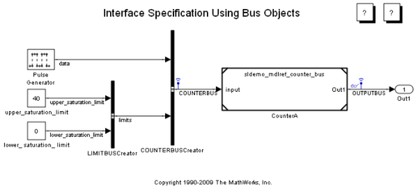
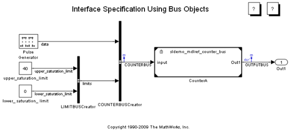

モデル参照の保護モデル
このデモでは、モデル参照の保護モデルの作成方法と使用方法を説明します。
目次
デモの要件
モデル参照の保護モデルを生成する前に、Real-Time Workshop® をインストールする必要があります。このデモの間、Simulink® と Real-Time Workshop は、現在の作業ディレクトリに作成される Simulink プロジェクト ディレクトリにコードを生成する可能性があります。このディレクトリにファイルを生成したくない場合 (あるいは生成できない場合) は、まず、適切なディレクトリに変更してください。
デモ モデルを開く
デモ モデル sldemo_mdlref_bus を開きます。
図 1: デモ モデル sldemo_mdlref_bus
参照されるモデルの保護
このモデルには、CounterA という 1 つの Model ブロックが含まれています。このブロックに参照されるモデルを保護するには、次のコマンドのいずれかを使用します。
[harnessHandle, neededVars] = Simulink.ModelReference.protect('sldemo_mdlref_counter_bus', 'Harness', true)
または
[harnessHandle, neededVars] = Simulink.ModelReference.protect('sldemo_mdlref_bus/CounterA', 'Harness', true)
このコマンドによって、保護モデル sldemo_mdlref_counter_bus.mdlp が作成されます。このモデルは、ノーマル モードのシミュレーションで、元のモデル ファイルなしで使用できます。[Harness] パラメーターを指定すると、Simulink は、保護モデルを参照する Model ブロックが含まれたモデルであるハーネス モデルを作成します。ハーネス モデルに対するハンドルは、関数 protect によって、最初の出力として返されます。
保護モデルに必要な変数の特定
保護モデルを実行するには、ベース ワークスペースで保護モデルにいくつかの変数を定義する必要があります。たとえば、保護モデル sldemo_mdlref_counter_bus.mdlp には、モデルのルート入力端子および出力端子でバスを指定するベース ワークスペース変数が必要です。
保護モデルを出荷する際は、必要な変数の定義を含める必要があります。そうしなければ、そのモデルは使用不能になります。関数 protect の 2 つ目の出力である neededVars は、どのベース ワークスペース変数を送信する必要があるのかを特定するのに役立ちます。neededVars の値は、保護モデルに必要なベース ワークスペース変数の名前を含むセル配列です。ただし、このセル配列には、そのモデルに必要のないワークスペース変数の名前も含まれている場合があります。
保護モデルを出荷する前に、neededVars を編集して、そのモデルに必要のない変数の名前を削除してください。その後、次のように、必要なワークスペース変数を MAT ファイルに保存できます。
save('sldemo_mdlref_bus_vars', neededVars{:});
保護モデルの使用
保護モデルを使用するには、Model ブロックの ModelName パラメーターをその保護モデル ファイルの名前に設定します。これは、Model ブロックの [パラメーター] ダイアログを使用するか、次のような set_param を使用して実行できます。
set_param('sldemo_mdlref_bus/CounterA', 'ModelName', 'sldemo_mdlref_counter_bus.mdlp')
Model ブロックのアイコンは、このブロックが保護モデルを参照すると、ロックを表示するように変化します。
図 2: 保護モデルの参照